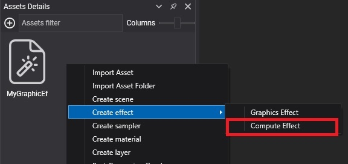
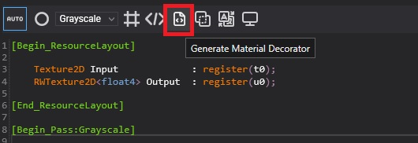
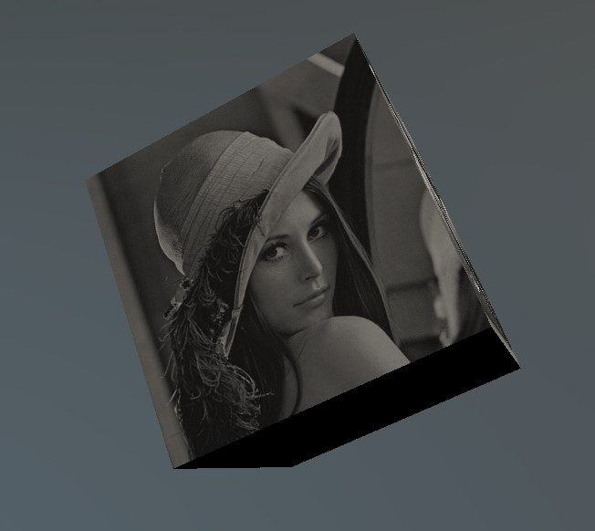

Create Compute Tasks
A compute task runs a compute effect on the GPU. Use one for work that is massively parallel and slow on the CPU: image filters, simulations, procedural data.
Compute Effect
First create a compute effect from the Assets Details panel (Create effect > Compute Effect) and write the compute shader in HLSL.

Example
This compute effect converts the input texture to grayscale and writes the result to an output texture. Create Effects explains the structure of the file.
[Begin_ResourceLayout]
Texture2D Input : register(t0);
RWTexture2D<float4> Output : register(u0);
[End_ResourceLayout]
[Begin_Pass:Grayscale]
[Profile 11_0]
[Entrypoints CS = CS]
[numthreads(8, 8, 1)]
void CS(uint3 threadID : SV_DispatchThreadID)
{
float4 color = Input.Load(float3(threadID.xy, 0));
color.rgb = color.r * 0.3 + color.g * 0.59 + color.b * 0.11;
Output[threadID.xy] = color;
}
[End_Pass]
The pass name, Grayscale, is how you select it when you run the task. [numthreads(8, 8, 1)] sets the thread group size, which must match the group size you pass to Run2D.
ComputeTask Decorator
From code you work with the compute task through a decorator: a generated class with one property per resource of the effect. Generate it from the Effect Editor.

Create a new ComputeTask from code
This scene runs the GPUFilter compute effect above through its generated GPUFilter decorator, and shows the result on a spinning cube.
using Evergine.Common.Graphics;
using Evergine.Components.Graphics3D;
using Evergine.Framework;
using Evergine.Framework.Graphics;
using Evergine.Framework.Graphics.Effects;
using Evergine.Framework.Graphics.Materials;
using Evergine.Framework.Services;
using Evergine.Mathematics;
public class ComputeScene : Scene
{
protected override void CreateScene()
{
var graphicsContext = Application.Current.Container.Resolve<GraphicsContext>();
var assetsService = Application.Current.Container.Resolve<AssetsService>();
Texture inputTexture = assetsService.Load<Texture>(EvergineContent.Textures.lena_png);
uint width = inputTexture.Description.Width;
uint height = inputTexture.Description.Height;
// UnorderedAccess lets the compute shader write it; ShaderResource lets the material read it.
var outputTextureDesc = new TextureDescription()
{
Type = TextureType.Texture2D,
Usage = ResourceUsage.Default,
Flags = TextureFlags.UnorderedAccess | TextureFlags.ShaderResource,
Format = PixelFormat.R8G8B8A8_UNorm,
Width = width,
Height = height,
Depth = 1,
MipLevels = 1,
ArraySize = 1,
CpuAccess = ResourceCpuAccess.None,
SampleCount = TextureSampleCount.None,
};
Texture outputTexture = graphicsContext.Factory.CreateTexture(ref outputTextureDesc);
Effect computeEffect = assetsService.Load<Effect>(EvergineContent.Effects.GPUFilter);
var task = new GPUFilter(computeEffect)
{
Input = inputTexture,
Output = outputTexture,
};
// One thread per pixel, in 8x8 groups to match [numthreads(8, 8, 1)].
task.Run2D(width, height, pass: "Grayscale");
var material = new StandardMaterial(assetsService.Load<Effect>(DefaultResourcesIDs.StandardEffectID))
{
LayerDescription = assetsService.Load<RenderLayerDescription>(DefaultResourcesIDs.OpaqueRenderLayerID),
BaseColorTexture = outputTexture,
BaseColorSampler = assetsService.Load<SamplerState>(DefaultResourcesIDs.LinearClampSamplerID),
};
Entity cube = new Entity("filteredCube")
.AddComponent(new Transform3D())
.AddComponent(new MaterialComponent() { Material = material.Material })
.AddComponent(new CubeMesh())
.AddComponent(new Spinner() { AxisIncrease = new Vector3(0.1f, 0.2f, 0.3f) })
.AddComponent(new MeshRenderer());
this.Managers.EntityManager.Add(cube);
}
}
The result:

Note
The overloads without a CommandBuffer record the dispatch, submit it to the compute queue and wait until the GPU finishes. That is simple for one-off work at load time. For work that repeats every frame, pass your own command buffer so the dispatch runs with the rest of the frame instead of stalling it.